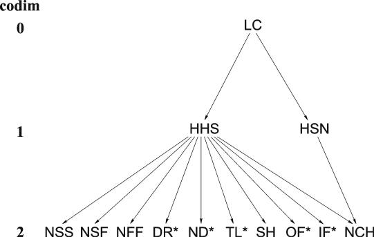

Upon the development of MatCont and CL_MatCont, there were multiple objectives:
A general comparison of the available features during computations for ODEs currently supported by the most widely used software packages auto97/2000 [6], content 1.5 [11] and MatCont/ CL_MatCont are indicated in Table .
Table 1: Supported functionalities for ODEs in AUTO (A), CONTENT (C) and MATCONT (M).
| a | c | m | |
| time-integration | + | + | |
| Poincaré maps | + | ||
| monitoring user functions along curves computed by continuation | + | + | + |
| continuation of equilibria | + | + | + |
| detection of branch points and codim 1 bifurcations (limit and Hopf points) of equilibria | + | + | + |
| computation of normal forms for codim 1 bifurcations of equilibria | + | + | |
| continuation of codim 1 bifurcations of equilibria | + | + | + |
| detection of codim 2 equilibrium bifurcations (cusp, Bogdanov-Takens, fold-Hopf, generalized and double Hopf) | + | + | |
| computation of normal forms for codim 2 bifurcations of equilibria | + | ||
| continuation of codim 2 equilibrium bifurcations in three parameters | + | ||
| continuation of limit cycles | + | + | + |
| computation of phase response curves and their derivatives | + | ||
| detection of branch points and codim 1 bifurcations (limit points, flip and Neimark-Sacker (torus)) of cycles | + | + | + |
| continuation of codim 1 bifurcations of cycles | + | + | |
| branch switching at equilibrium and cycle bifurcations | + | + | + |
| continuation of branch points of equilibria and cycles | + | ||
| computation of normal forms for codim 1 bifurcations of cycles | + | ||
| detection of codim 2 bifurcations of cycles | + | ||
| continuation of orbits homoclinic to equilibria | + | + | |
Relationships between objects of codimension 0, 1 and 2 computed by MatCont and CL_MatCont are presented in Figures 1 and 2, while the symbols and their meaning are summarized in Tables 2 and 3, where the standard terminology is used, see [10].
Figure 1: The graph of adjacency for equilibrium and limit cycle bifurcations in MatCont

Figure 2: The graph of adjacency for homoclinic bifurcations in MatCont; here * stands for S or U.
| Type of object | Label |
| Point | P |
| Orbit | O |
| Equilibrium | EP |
| Limit cycle | LC |
| Limit Point (fold) bifurcation | LP |
| Hopf bifurcation | H |
| Limit Point bifurcation of cycles | LPC |
| Neimark-Sacker (torus) bifurcation | NS |
| Period Doubling (flip) bifurcation | PD |
| Branch Point | BP |
| Cusp bifurcation | CP |
| Bogdanov-Takens bifurcation | BT |
| Zero-Hopf bifurcation | ZH |
| Double Hopf bifurcation | HH |
| Generalized Hopf (Bautin) bifurcation | GH |
| Branch Point of Cycles | BPC |
| Cusp bifurcation of Cycles | CPC |
| 1:1 Resonance | R1 |
| 1:2 Resonance | R2 |
| 1:3 Resonance | R3 |
| 1:4 Resonance | R4 |
| Chenciner (generalized Neimark-Sacker) bifurcation | CH |
| Fold-Neimark-Sacker bifurcation | LPNS |
| Flip-Neimark-Sacker bifurcation | PDNS |
| Fold-flip | LPPD |
| Double Neimark-Sacker | NSNS |
| Generalized Period Doubling | GPD |
Table 2: Equilibrium- and cycle-related objects and their labels within the GUI
| Type of object | Label |
| Limit cycle | LC |
| Homoclinic to Hyperbolic Saddle | HHS |
| Homoclinic to Saddle-Node | HSN |
| Neutral saddle | NSS |
| Neutral saddle-focus | NSF |
| Neutral Bi-Focus | NFF |
| Shilnikov-Hopf | SH |
| Double Real Stable leading eigenvalue | DRS |
| Double Real Unstable leading eigenvalue | DRU |
| Neutrally-Divergent saddle-focus (Stable) | NDS |
| Neutrally-Divergent saddle-focus (Unstable) | NDU |
| Three Leading eigenvalues (Stable) | TLS |
| Three Leading eigenvalues (Unstable) | TLU |
| Orbit-Flip with respect to the Stable manifold | OFS |
| Orbit-Flip with respect to the Unstable manifold | OFU |
| Inclination-Flip with respect to the Stable manifold | IFS |
| Inclination-Flip with respect to the Unstable manifold | IFU |
| Non-Central Homoclinic to saddle-node | NCH |
Table 3: Objects related to homoclinics to equilibria and their labels within the GUI
An arrow in Figure 1 from O to EP or LC means that by starting time integration from a given point we can converge to a stable equilibrium or a stable limit cycle, respectively. In general, an arrow from an object of type A to an object of type means that that object of type B can be detected (either automatically or by inspecting the output) during the computation of a curve of objects of type A. For example, the arrows from EP to H, LP, and BP mean that we can detect H, LP and BP during the equilibrium continuation. Moreover, for each arrow traced in the reversed direction, i.e. from B to A, there is a possibility to start the computation of the solution of type A starting from a given object B. For example, starting from a BT point, one can initialize the continuation of both LP and H curves. Of course, each object of codim 0 and 1 can be continued in one or two system parameters, respectively.
The same interpretation applies to the arrows in Figure 2, where * stands for either S or U, depending on whether a stable or an unstable invariant manifold is involved.
In principle, the graphs presented in Figures 1 and 2 are connected. Indeed, it is known that curves of codim 1 homoclinic bifurcations emanate from the BT, ZH, and HH codim 2 points. The current version of MatCont fully supports, however, only one such connection: BT ® HHS.